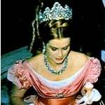
|
Dedicated to Princess Grace |
|
In 1297 the principality was acquired by the house of
Grimaldi, a Genoese family. In 1793, during the French Revolution,
the Grimaldi were dispossessed and their principality was annexed by
France. By the terms of the 1815 Treaty of Vienna, the principality
was made a protectorate of the kingdom of Sardinia. In 1861 Monaco
was restored as an independent principality under the guardianship
of France. Monaco was granted a constitution by Prince Albert I in
1911. The heir to Prince Rainier (77 years old in 2000) is Prince
Albert (born 1958). |
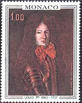 |
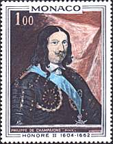 |
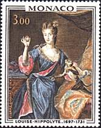 |
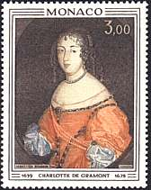 |
In 1956 Prince Rainier married Grace Kelly, an American film actress. The international attention which the marriage attracted materially helped the rebuilding of Monaco's fortunes during the 1960s and 1970s, helping to turn it into a leading destination for the richest holiday makers.
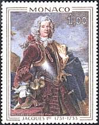 |
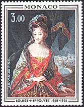 |
|
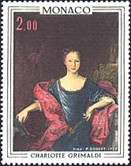 |
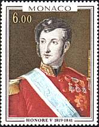 |
Grace Patricia Kelly was born the November 12, 1928, in Philadelphia, PA, USA. Some say about Grace that she was the most beautiful woman ever.
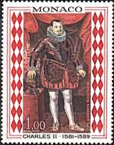 |
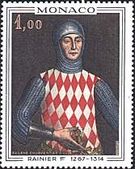 |
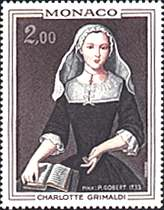 |
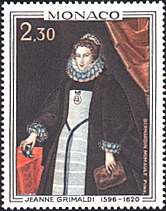 |
And she was an undisputed real-life princess.
| Former model and stage
actress, Kelly came to film prominence with High Noon (1952) and her
Oscar-nominated role in Mogambo (1953).
She then starred in three consecutive films directed by Alfred Hitchcock. |
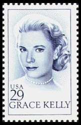 |
The
renown film director made brilliant use of
her signature combination of cool, elegant charm and smoldering sensuality.
Her Serene Highness, Princess Grace of Monaco died in a car accident in the year 1982. |
Links:
-
Engraved Stamps of France
-
Engraved Stamps of Czechoslovakia
-
Engraved Stamps of C. Slania
-
Other Royal Houses